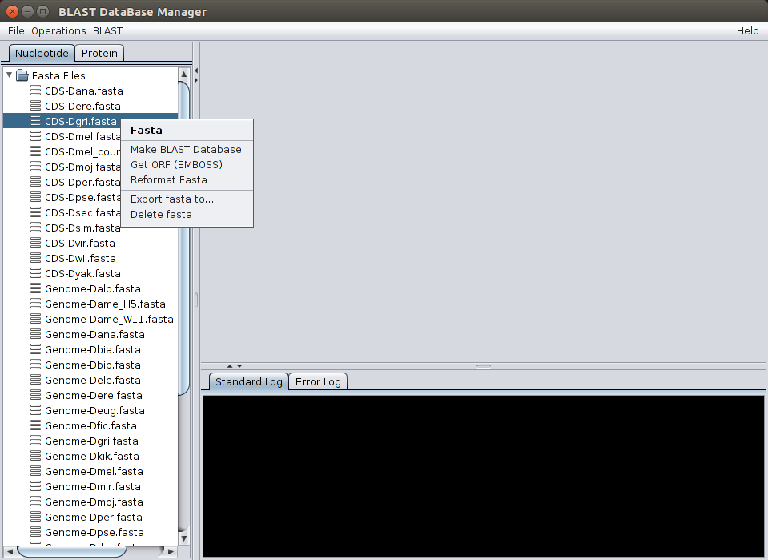

FASTA, BLAST-formatted databases and output files can be deleted by double clicking on top of the item with the right mouse bottom. FASTA, BLAST-formatted databases and output files can be exported by double clicking on top of the item with the right mouse bottom. FASTA and output files (but not BLAST-formatted databases) can be renamed when exported.

Deleting and exporting files